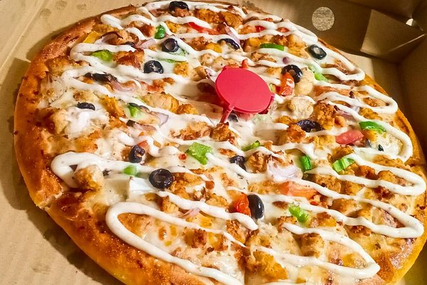

Pizza

Description
Pizza is a beloved dish that originated in Italy but has since become a global favorite. To prepare a classic pizza, start with the dough, which requires simple ingredients such as flour, yeast, water, olive oil, and salt. After mixing and kneading the dough, allow it to rise until it doubles in size. Once ready, roll it out to your desired thickness and shape. Spread a layer of tomato sauce over the dough, using either store-bought or homemade sauce made from crushed tomatoes, garlic, olive oil, and herbs like oregano and basil.
Next, add your favorite toppings. A traditional Margherita pizza includes slices of fresh mozzarella cheese, fresh basil leaves, and a drizzle of olive oil. Other popular toppings include pepperoni, mushrooms, bell peppers, onions, and olives. After assembling the pizza, bake it in a preheated oven at a high temperature (around 475°F or 245°C) for 10-15 minutes, or until the crust is golden and the cheese is melted and bubbly. Serve hot and enjoy the crispy, cheesy goodness of your homemade pizza!
Ingredients
- 2 1/2 cups all-purpose flour
- 1 packet of active dry yeast (about 2 1/4 teaspoons)
- 1 cup warm water
- 2 tablespoons olive oil
- 1 teaspoon salt
- 1/2 teaspoon sugar
- 1/2 cup tomato sauce (store-bought or homemade)
- 1 1/2 cups shredded mozzarella cheese (or fresh mozzarella slices)
- Fresh basil leaves (optional, for Margherita pizza)
- Olive oil (for drizzling)
- Optional toppings: pepperoni, mushrooms, bell peppers, onions, olives, etc.
Steps
- In a large bowl, dissolve the yeast and sugar in warm water. Let it sit for about 5-10 minutes until the mixture becomes frothy.
- Add flour, olive oil, and salt to the yeast mixture. Mix until a dough forms.
- Transfer the dough to a floured surface and knead for about 5-7 minutes until it becomes smooth and elastic.
- Place the dough in a greased bowl, cover it with a damp cloth, and let it rise in a warm place for about 1-1.5 hours, or until it doubles in size.
- Preheat your oven to 475°F (245°C). If using a pizza stone, place it in the oven to heat up as well.
- Punch down the risen dough and divide it into two portions for two pizzas (or keep it as one large pizza). Roll out the dough to your desired thickness and shape.
- Transfer the rolled dough onto a baking sheet or pizza stone. Spread a layer of tomato sauce over the dough, leaving a small border for the crust.
- Add your toppings, starting with mozzarella cheese, and then any additional ingredients like pepperoni, mushrooms, bell peppers, onions, or olives.
- Bake the pizza in the preheated oven for 10-15 minutes, or until the crust is golden and the cheese is melted and bubbly.
- Remove the pizza from the oven and let it cool for a couple of minutes. Slice and serve hot!